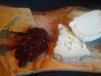

2.1 兩條 transform：test_tfm 與 train_tfm
transform（轉換）是一個函式：輸入一張圖，輸出處理過的結果。train.py 定義了兩條：
"""## **Transforms**
Torchvision provides lots of useful utilities for image preprocessing, data wrapping as well as data augmentation.
Please refer to PyTorch official website for details about different transforms.
"""
# Normally, We don't need augmentations in testing and validation.
# All we need here is to resize the PIL image and transform it into Tensor.
test_tfm = transforms.Compose([
transforms.Resize((128, 128)),
transforms.ToTensor(),
])
# However, it is also possible to use augmentation in the testing phase.
# You may use train_tfm to produce a variety of images and then test using ensemble methods
train_tfm = transforms.Compose([
# Resize the image into a fixed shape (height = width = 128)
transforms.Resize((128, 128)),
# You may add some transforms here.
# ToTensor() should be the last one of the transforms.
transforms.ToTensor(),
])transforms 是第 12 行 import 的 torchvision.transforms。transforms.Compose([a, b]) 把幾個轉換串起來，呼叫時依序執行：先 a、再把 a 的結果交給 b。兩條的內容一模一樣，都是「縮成 128×128 → 轉成 tensor」：
test_tfm（第 44–47 行）給驗證集與測試集用。第 42–43 行的註解說：測試與驗證通常不需要增強，只要縮放、轉成 tensor 就好。train_tfm（第 50–56 行）給訓練集用。第 53 行「You may add some transforms here」是留給學生的空位：資料增強要加在這裡，報告的 Q1 就是要你填這一格（第 6 章）。第 54 行提醒ToTensor()要放在最後，原因在 2.3 節。- 第 48–49 行說也可以在測試時用
train_tfm產生同一張圖的多個版本、再把預測合起來，這就是 test time augmentation（TTA，第 6、8 章）。
第 61 行把 train_tfm 交給訓練集的 FoodDataset、第 63 行把 test_tfm 交給驗證集，__getitem__ 的 im = self.transform(im)（dataset.py:29，第 1 章）就是在呼叫它們。印出 test_tfm 看看 torchvision 實際用了什麼設定（在 HW03/ 裡、import torchvision.transforms as T 之後 print）：
Compose(
Resize(size=(128, 128), interpolation=bilinear, max_size=None, antialias=True)
ToTensor()
)程式裡只寫了 (128, 128)，其餘三個是預設值：用雙線性插值（bilinear）、不限制最大邊長、縮小時做抗鋸齒（antialias）。
2.2 Resize((128, 128))：壓成正方形
第 1 章 1.5 節看到，訓練集有 542 種圖片大小，最常見的是 512×512 與 512×384。Resize 收到一個 (高, 寬) 的 tuple 時，會不管原本的比例，直接把圖拉成那個大小。正方形的 512×512 縮成 128×128，長寬各除以 4，形狀不變；4 : 3 的 512×384 也縮成 128×128，寬除以 4、高除以 3，圖被壓扁了。用第 1 類的 1_0.jpg（寬 512、高 384）比較：

128×96
Resize((128, 128))128×128，上下被拉長
右邊這張就是模型實際看到的樣子（左邊用 Pillow 的 thumbnail 縮小，它會保持比例，得到 128×96）。物體的形狀被拉長了，但 CNN 還是能學：訓練、驗證、測試都經過同樣的壓縮，模型看到的永遠是「被壓過的世界」，前後一致就好。代價是同一種食物在橫圖與正方形圖裡的長相不太一樣，等於多了一種模型要適應的變化。
為什麼是 128？投影片的 Q1 說「圖片大小自選」，128 是範例程式的選擇。邊長減半，像素就剩四分之一，卷積的計算量也大約剩四分之一；邊長加倍，計算量變 4 倍，而且第 0 章 0.2 節的模型會出錯，因為 nn.Linear(512 * 4 * 4, 1024) 寫死了攤平後的大小（第 0 章自我測驗第 5 題）。所以「改圖片大小」不只是改 transform，還得一起改模型。
現在的做法：先縮短邊、再裁中間
要保持比例，常見的評估用轉換是 Resize(144)（只給一個整數：把短邊縮成 144，長邊按比例）再接 CenterCrop(128)（從中間裁出 128×128），代價是裁掉長邊的兩端。訓練時則多用 RandomResizedCrop：每次隨機裁一塊再縮放，同時達到「固定大小」與「資料增強」兩個目的（第 6 章會用到它）。今天在 ImageNet 上訓練的模型大多用 224×224 或更大的輸入；128 是為了讓這份作業在 Kaggle 的免費 GPU 上跑得動。
2.3 ToTensor() 做了三件事
Resize 輸出的仍然是 Pillow 的圖片物件；ToTensor() 才把它變成模型吃得下的 tensor。它做了三件事：
- 型別：Pillow 圖片 → PyTorch tensor。
- 維度順序：Pillow 的像素排成「高 × 寬 × 通道」（HWC），
ToTensor改成「通道 × 高 × 寬」（CHW），因為nn.Conv2d要求通道在前。 - 數值範圍：每個像素 0–255 的整數（
uint8）→ 除以 255，變成 0.0–1.0 的float32。
實測 1_0.jpg：Resize 之後左上角像素是 (18, 22, 18)（紅、綠、藍，很暗的一個點），ToTensor 之後 x[:, 0, 0] 是 [0.0706, 0.0863, 0.0706]，正是 18/255、22/255、18/255。整張圖的形狀是 torch.Size([3, 128, 128])、型別 torch.float32。本書也把 Resize 後的 128 × 128 × 3 個整數取出來，自己做 permute(2, 0, 1) 再 ÷ 255，和 ToTensor() 的結果逐位元相同。
第 54 行說 ToTensor() 要放最後，是因為這份程式用的 Resize、以及第 6 章大部分的隨機轉換，都是對 Pillow 圖片操作的；先轉成 tensor，後面接的轉換收到的就不是 Pillow 圖片了。（較新的 torchvision 大多數轉換也接受 tensor，但這份程式沿用 Pillow 的寫法。）
沒有做的事：Normalize
常見的影像流程在 ToTensor 後面還會接一個 Normalize(mean, std)，把每個通道減掉平均、除以標準差，讓數值大約落在 −2 到 2 之間、平均 0。這份程式沒有做，輸入停在 0–1。本書把訓練集 9,866 張全部經過 test_tfm 後算了一次：
| 通道 | 平均 | 標準差 |
|---|---|---|
| 紅（R） | 0.5549 | 0.2668 |
| 綠（G） | 0.4509 | 0.2694 |
| 藍（B） | 0.3436 | 0.2766 |
食物照片偏紅、偏暖，紅色通道的平均比藍色高了 0.21。沒有 Normalize 也能訓練，原因之一是第 0 章看到的模型在第一個卷積之後立刻接了 BatchNorm：不管輸入的平均是多少，BatchNorm 都會把卷積的輸出重新調成平均 0 左右（第 3 章）。投影片第 34 頁把 Image Normalization 列為可以試的技巧之一；它在這個模型上的效果，本書沒有實測。
現在的做法：transforms.v2
torchvision 0.16 起推薦 torchvision.transforms.v2：同一套轉換可以同時處理圖片、bounding box、分割遮罩，而且直接吃 tensor。ToTensor() 在 v2 裡被拆成兩步 ToImage() 與 ToDtype(torch.float32, scale=True)，把「改型別」與「除以 255」分開寫清楚。用預訓練模型時，Normalize 一定要用那個模型訓練時的平均與標準差（ImageNet 的慣例是 mean=[0.485, 0.456, 0.406]、std=[0.229, 0.224, 0.225]），否則輸入的分布和模型學過的不一樣。
2.4 DataLoader：把 256 張疊成一個 batch
回到第 0 章 0.5 節引用過的那四行：
train_set = FoodDataset(os.path.join(dataset_dir, "training"), tfm=train_tfm)
train_loader = DataLoader(train_set, batch_size=batch_size, shuffle=True, num_workers=0, pin_memory=True)
valid_set = FoodDataset(os.path.join(dataset_dir, "validation"), tfm=test_tfm)
valid_loader = DataLoader(valid_set, batch_size=batch_size, shuffle=True, num_workers=0, pin_memory=True)DataLoader 每次被 for 迴圈要一個 batch 時，做三件事：決定這一批要哪 256 個索引、對每個索引呼叫一次 __getitem__（讀圖 → Resize → ToTensor → 取標籤）、把 256 個結果疊起來。疊起來的那一步叫 collate：256 個 (3, 128, 128) 疊成 (256, 3, 128, 128)，256 個整數標籤變成一個 (256,) 的 tensor。四個參數：
batch_size=batch_size：config.py的 256。原版範例程式是 64。shuffle=True：每個 epoch 開始時把索引重新打亂。num_workers=0：不另開子行程，讀圖、轉換全部在主程式裡做（2.5 節）。pin_memory=True：把疊好的 batch 放在「鎖頁記憶體」（pinned memory）裡。作業系統不會把這塊記憶體換到硬碟，GPU 可以直接用 DMA 讀它，從主機記憶體複製到 GPU 會比較快。
實際取一個 batch 看看。為了看得出順序，這裡用驗證集、shuffle=False：
batch torch.Size([256, 3, 128, 128]) torch.float32 torch.Size([256]) torch.int64 [0, 0, 0, 0, 0, 0, 0, 0]圖片是 (256, 3, 128, 128) 的 float32；標籤是 (256,) 的 int64（nn.CrossEntropyLoss 要求類別標籤是整數）。前 8 個標籤全是 0：沒有打亂時，一個 batch 裡全是同一類，因為第 1 章看到 self.files 是照檔名排序的，同一類的檔案排在一起。驗證集第 0 類有 362 張，第一個 batch 的 256 張全部是麵包。如果訓練時也不打亂，模型會連續看好幾十個 batch 的麵包、再連續看蔬果，每一步的梯度都只代表一類，訓練會很不穩定。這就是第 62 行 shuffle=True 的用處。
第 64 行的驗證集也打亂了。驗證時不更新權重，順序本來不影響模型；但它會影響 train.py 算驗證準確率的方式，也會影響訓練集的亂數順序。這兩件事都留到第 4 章實測。
一個 epoch 有幾個 batch
| 資料 | 張數 | batch 256 的個數 | 最後一批 | 原版 batch 64 |
|---|---|---|---|---|
| 訓練集 | 9,866 | 39 | 138 張 | 155 個（最後一批 10 張） |
| 驗證集 | 3,430 | 14 | 102 張 | — |
| 測試集 | 3,347 | 14 | 19 張 | — |
9,866 ÷ 256 = 38.5，所以是 38 個滿的 batch 加上一個 138 張的小 batch，共 39 個；本書實測 len(train_loader) 是 39、len(valid_loader) 是 14。DataLoader 預設 drop_last=False，最後不滿 256 的那一批也會送出來。第 0 章看到 tqdm 的進度條數到 39 和 14，就是這兩個數字。
batch 從 64 改成 256，一個 epoch 的更新次數從 155 次變成 39 次。每一次更新用的資料多了 4 倍、梯度的雜訊比較小，但更新的次數只剩約四分之一；學習率沒有跟著調（仍是 0.0003），所以同樣 5 個 epoch，256 的版本實際上「走的步數」少很多。config.py:3 的註解建議記憶體夠時改成 512：一個 batch 的圖片是 256 × 3 × 128 × 128 個 float32 = 50,331,648 bytes（48 MiB），512 就是 96 MiB，再加上每一層的中間結果，主要的記憶體壓力在 GPU 上的那些中間結果。
2.5 讀圖片的代價：num_workers=0
第 0 章量到 train.py 5 個 epoch 花了 3 分 0.70 秒，CPU 使用率 1723%。時間花在哪裡？一個 epoch 裡，CPU 要對 9,866 張訓練圖加 3,430 張驗證圖各做一次：讀檔、JPEG 解碼（大多是 512×512 的圖）、縮成 128×128、轉成 tensor；GPU 則做 39 + 14 個 batch 的 forward（訓練的 39 個還要 backward）。num_workers=0 時這兩件事輪流做：CPU 準備好一個 batch，GPU 才開始算；GPU 算的時候，CPU 沒有在準備下一批。
本書把兩部分分開量（2026-10-05，GPU 上沒有任何其他程式時；工具是 docs/tools/hw03_facts.py 的 timing，轉換一律用 test_tfm、batch 256）：
| 量什麼 | 時間 |
|---|---|
只讀圖、不訓練：num_workers=0 讀完訓練集一遍（重複 3 次） | 22.5、24.8、24.0 秒（CPU 時間約 500 秒） |
只讀圖：驗證集一遍，num_workers=0 | 9.1 秒 |
| 只訓練：39 個 batch 已經在記憶體裡，跑一個 epoch 的 forward + backward（2 次） | 6.0、5.3 秒 |
實驗工具記錄的 train.py 每個 epoch（5 個 epoch） | 訓練 25.1–31.6 秒，含驗證 36.0–41.1 秒 |
答案很清楚：一個 epoch 的訓練約 28 秒裡，GPU 真正在算的只有 5–6 秒，其餘 20 多秒都在等 CPU 讀圖。模型只有 1,283 萬個參數、輸入只有 128×128，對 GPU 來說太輕了（訓練時 GPU 記憶體最多只用到 5,826 MiB）；瓶頸在 JPEG 解碼與縮放。驗證那一段也一樣，讀 3,430 張要 9 秒，而 14 個 batch 的 forward 只是零頭。
1723% 的 CPU 從哪裡來
還有一個怪現象：讀一遍訓練集花了約 500 秒的 CPU 時間，但牆上時間只有 23 秒——平均有 21 個核心在忙。num_workers=0 明明只有一個行程，Pillow 的解碼與縮放也都是單執行緒的。本書把讀一張圖的四個步驟拆開，各量 768 張：
| 步驟（768 張） | PyTorch 預設 24 條執行緒：牆上時間／CPU 時間 | 限制成 1 條執行緒：牆上時間／CPU 時間 |
|---|---|---|
| JPEG 解碼（Pillow） | 0.98 秒／1.33 秒 | 0.93 秒／0.99 秒 |
| Resize（Pillow） | 0.50 秒／0.54 秒 | 0.50 秒／0.53 秒 |
| ToTensor（PyTorch） | 0.15 秒／3.78 秒 | 0.08 秒／0.09 秒 |
| collate 疊成 batch（PyTorch） | 0.07 秒／1.64 秒 | 0.07 秒／0.07 秒 |
真正花時間的是 Pillow 的解碼與縮放；PyTorch 的兩步本身很快，但在預設設定下用掉了 40 倍的 CPU 時間。PyTorch 在 CPU 上的運算預設用 OpenMP 開滿所有核心（本機 torch.get_num_threads() 是 24），對 ToTensor 的「除以 255」、collate 的「疊起來」這種只有幾十萬個數字的小運算，開 24 條執行緒的成本比運算本身還大，而且執行緒做完之後會先空轉一陣子等下一份工作，和 Pillow 的解碼搶 CPU。所以把執行緒限制成 1 條，讀一遍訓練集反而更快：15.0、17.1、15.1 秒，CPU 使用率約 100%。
對整支 train.py 也一樣。本書在 HW03 的複本裡，不改任何一行程式，只加一個環境變數：
$ OMP_NUM_THREADS=1 ../.venv/bin/python train.py5 個 epoch 從 3 分 0.70 秒變成 2 分 27.89 秒，CPU 使用率從 1723% 降到 99%；印出的每一行、存下的 sample_best.ckpt 都和原本逐位元組相同（這兩個步驟的結果和用幾條執行緒無關）。
多開幾個 worker
更直接的辦法是讓讀圖和訓練同時進行：num_workers=4 會開 4 個子行程，各自讀圖、轉換、疊 batch，主程式只管把現成的 batch 送進 GPU。只讀圖的實測：
| 只讀圖、訓練集一遍 | 時間 |
|---|---|
num_workers=0 | 22.5–24.8 秒（見上表） |
num_workers=4 | 4.2 秒 |
num_workers=8 | 2.7 秒 |
把複本裡 train.py 的兩個 num_workers=0 都改成 4，整支 5 個 epoch 只要 46.86 秒，是原本的四分之一。但這次印出來的數字變了：第 1 個 epoch 的訓練 loss 從 1.95937 變成 1.94046，第 5 個 epoch 的驗證準確率從 0.55541 變成 0.48967。只改了讀資料的方式，訓練結果為什麼會不同？答案和 tqdm 進度條有關，它會悄悄改變打亂的順序，第 4 章會完整追一遍。這裡先記住結論：本書實測，拿掉進度條之後，num_workers=0 與 num_workers=4 的結果逐位元組相同，而且 4 個 worker 的版本只要 43.31 秒（0 個是 150.19 秒，兩次都設了 OMP_NUM_THREADS=1）。也就是說 worker 數本身不改變結果，是進度條和 worker 的組合改變了它。
現在的做法：多個 worker、GPU 解碼
今天的訓練程式幾乎都會設 num_workers 大於 0（常見的是 CPU 核心數或它的一半），並加上 persistent_workers=True，讓子行程在 epoch 之間不用重開。圖片很多時，還可以把 JPEG 解碼搬到 GPU（torchvision.io.decode_jpeg(..., device="cuda") 或 NVIDIA DALI），或事先把圖縮小、存成 WebDataset、FFCV 這類連續存放的格式，省掉大部分讀檔與解碼的時間。
本章重點
train.py定義兩條 transform，內容完全相同：Resize((128, 128))→ToTensor()。train_tfm的空位留給資料增強（第 6 章）。Resize((128, 128))不保留長寬比，4 : 3 的照片會被壓扁；預設雙線性插值、抗鋸齒。改圖片大小要一起改模型的nn.Linear(512 * 4 * 4, 1024)。ToTensor()：Pillow → tensor、HWC → CHW、0–255 的uint8→ 0–1 的float32（18 → 0.0706）。程式沒有做 Normalize；訓練集的 RGB 平均是 0.5549／0.4509／0.3436。- DataLoader 把 256 張疊成
(256, 3, 128, 128)，標籤(256,)的int64。訓練集一個 epoch 39 個 batch（最後一批 138 張），驗證集 14 個（最後一批 102 張）。 - 檔案照類別排序，不打亂的 batch 裡全是同一類，所以訓練集要
shuffle=True。驗證集也被打亂了，影響在第 4 章。 num_workers=0時讀圖與訓練輪流做：一個 epoch 的訓練約 28 秒裡，GPU 只算了 5–6 秒。PyTorch 預設 24 條執行緒反而拖慢讀圖，OMP_NUM_THREADS=1讓train.py從 3 分 0.70 秒變 2 分 27.89 秒、結果不變；num_workers=4只要 46.86 秒，但因為進度條的關係結果變了（第 4 章）。
自我測驗
1. 一張 384×512 的直圖（寬 384、高 512）經過 test_tfm，輸出的形狀是什麼？它被拉寬還是壓窄了？
輸出永遠是 torch.Size([3, 128, 128])。寬從 384 縮成 128（除以 3）、高從 512 縮成 128（除以 4），寬方向縮得比較少，所以相對來說圖被左右拉寬了，和 2.2 節那張橫圖被上下拉長剛好相反。
2. 如果把 train_tfm 寫成 Compose([ToTensor(), Resize((128, 128))])，順序反過來，會怎樣？
torchvision 的 Resize 也接受 tensor，所以不會出錯；但它是在 0–1 的 float tensor 上縮放，而不是在 Pillow 的 0–255 整數圖片上縮放，結果在小數點後會和原本略有不同，而且先把 512×512 的整張圖轉成 float tensor 再縮小，要多處理 16 倍的像素，比較慢。如果後面還接了只吃 Pillow 圖片的轉換，才會真的出錯。（這題是推論，本書沒有實際改順序去跑。）
3. 驗證集不打亂、batch 256 時，第一個 batch 有幾張麵包？第二個 batch 裡有哪幾類？
驗證集照檔名排序，第 0 類（麵包）362 張排最前面，接著是第 10 類（蔬果）232 張（第 1 章的字串排序）。第一個 batch 是第 0–255 張，全部 256 張都是麵包。第二個 batch 是第 256–511 張：前 106 張是剩下的麵包（362 − 256），後 150 張是蔬果。
4. batch 改成 64、其他不變，一個 epoch 的訓練有幾個 batch？最後一個 batch 有幾張？
9,866 ÷ 64 = 154.2，所以是 154 個滿的 batch 加一個 9,866 − 154 × 64 = 10 張的 batch，共 155 個。這也是原版範例程式（batch 64）一個 epoch 的步數。
5. 為什麼 labels 是 int64 而圖片是 float32？如果把標籤變成 float32 交給 nn.CrossEntropyLoss 會怎樣？
__getitem__ 回傳的標籤是 Python 的 int，collate 把一串 int 疊成 tensor 時預設用 int64；圖片是 ToTensor 產生的 float32。CrossEntropyLoss 把整數標籤當成「第幾類」；如果給的是和 logits 同形狀的 float tensor，它會把它當成每一類的機率（soft label，第 6 章的 mixup 會用到），而 (256,) 的 float 標籤和 (256, 11) 的 logits 形狀對不上，會出錯。（後半是依 PyTorch 文件的推論，本書沒有實際跑。）
延伸閱讀
- torchvision — Transforming and augmenting images：
transforms與transforms.v2的完整清單與遷移說明。 - PyTorch — Memory Pinning：
pin_memory在做什麼、什麼時候有幫助。 - PyTorch — Single- and Multi-process Data Loading：
num_workers的運作方式與每個 worker 的亂數種子。 - PyTorch — Performance Tuning Guide：DataLoader 的 worker 數、pinned memory、混合精度等訓練加速建議。